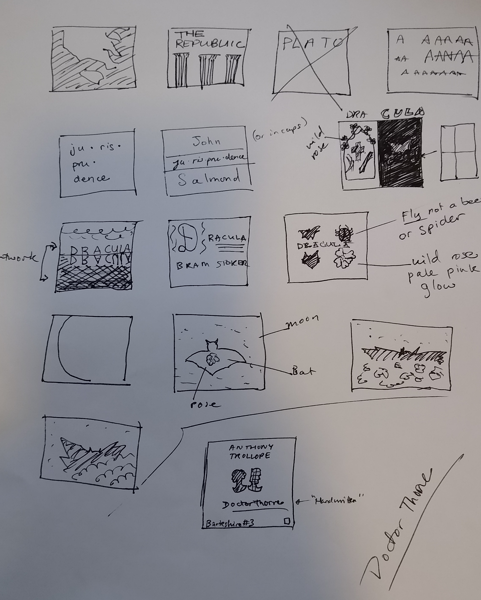

Design
In June 2022, I switched fields to officially become a remote UX designer, a dream many years in the making.
My recent design work for Covenant Eyes (my current employer) includes:
- Collaboratively designing a new onboarding experience for the Covenant Eyes iOS app (Summer 2022)
- Preparing and presenting a three-part training course on UX for developers (Mar–Apr 2022)
- Providing wireframes and design peer review for account structure & onboarding enhancements (Feb–Mar 2022)
- Designing and developing My Account's "Pay Now" feature (Aug 2021)
Past Projects
A selection of usability-related projects I've completed while working, self-learning, or volunteering. Examples have been sanitized to remove any non-public information.

Mobile Design
(Jun 2015)
Education
My UX education has been a combination of self-directed learning, attending talks, seeking mentors at work, and presenting topics & book reviews to colleagues.
Courses & Community
- Tacoma & Olympia User Experience Meetup - Attendee
- Sketching for UX Designers - Boost UX work with pen & paper! - Udemy
- Hacking the User Experience / UX for Developers - Pluralsight
- Making Sense of UX and Design in the Enterprise - Pluralsight
- Web Performance - Pluralsight
Books
- Don't Make Me Think - Steve Krug
- Rocket Surgery Made Easy - Steve Krug
- 100 Things Every Designer Needs to Know about People - Susan M. Weinschenk
- The Elements of User Experience - Jesse James Garrett
- CSS Secrets - Lea Verou
- Lean UX - Jeff Gothelf
- Designing UX Forms - Jessica Enders
Skills
- Usability testing
- Customer interviews
- Prototyping - Vue / JavaScript
- Wireframing
Tools
- Design: Figma, Pencil Project
- Graphics: Autodesk SketchBook, GIMP
- Research: Google Analytics, SEO Spider, WAVE, ADAScan, web.dev, Seobility, SEO Analyzer
- Collaboration: Trello, Jira, Miro
Audiobook Cover Design
Created with GIMP for LibriVox.org, a volunteer-run effort to provide free, public domain audiobooks in many languages. As required, each cover was created using public domain or Creative Commons 0 resources and open fonts, as well as completed within a 2-week timeframe.
With these covers, my goal is to provide a visualizer for the story, grab the listener's attention, and increase usability by making the title readable at thumbnail size. I also love to challenge myself by volunteering for a variety of book genres and experimenting with different artistic styles.
Sketch Samples
{kind=link}
Final Versions
Disclaimer: The views expressed in the above LibriVox audiobooks do not necessarily reflect my own views, and my cover art does not represent any endorsement of the books or their authors. To the best of my knowledge, I try to create covers for books that look interesting or educational, but most of them I have not read personally.